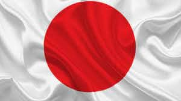
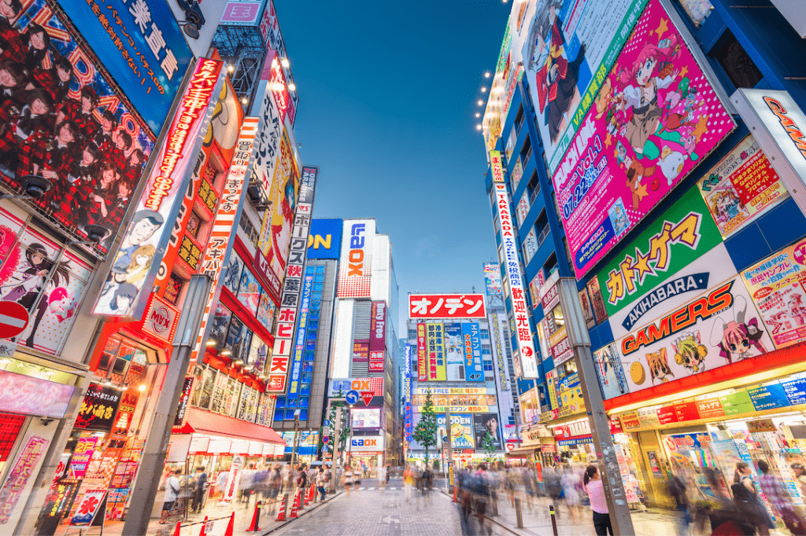
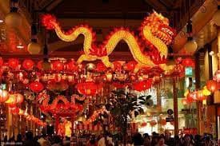
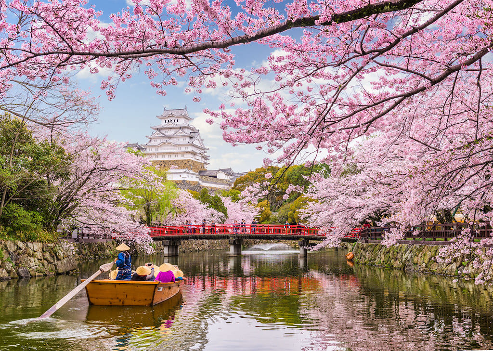
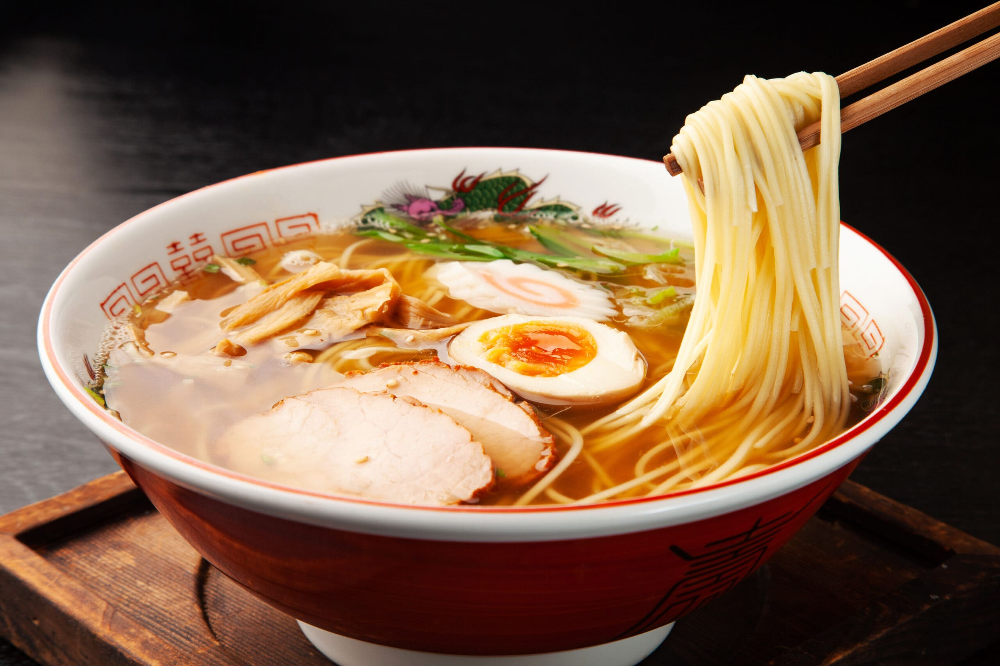

Japón constituye un país ubicado en el este de Asia, formado por un extenso archipiélago que se encuentra entre el océano Pacífico y el mar del Japón, al este de China, Rusia y la península coreana. Principalmente conformado por las islas de Honshū, Hokkaidō, Kyūshū y Shikoku, estas representan el 97 % de la superficie total del país.

A pesar de su tamaño geográfico comparativamente pequeño en relación con naciones como Rusia o Estados Unidos, Japón se destaca como uno de los países más densamente poblados del mundo, albergando aproximadamente a 128 millones de personas. Su capital, Tokio, es la área urbana más grande globalmente en términos de población, con más de 30 millones de habitantes. Actualmente, Japón sobresale como líder en cobertura tecnológica y figura como la tercera potencia económica a nivel mundial, siendo superado únicamente por China y Estados Unidos. Además, ostenta una de las escenas culturales más ricas y vibrantes en todo el planeta.
Japón ofrece una experiencia única que va más allá de las postales icónicas del monte Fuji y los templos centenarios. Desde las zonas rurales de Hokkaido hasta las playas subtropicales de Okinawa, cada región de Japón tiene su propio encanto y contribuye a la diversidad que caracteriza al país.
 
La gastronomía japonesa, famosa en todo el mundo, es un viaje culinario que va desde el sushi y el ramen hasta los sabores inexplorados del kaiseki. Los mercados callejeros de Osaka y los elegantes restaurantes de Kyoto ofrecen una deliciosa variedad que refleja la meticulosidad y creatividad de la cocina japonesa.
La meticulosidad y la perfección son valores arraigados en la cultura japonesa, desde la ceremonia del té hasta la precisión de las artes tradicionales como la caligrafía y la ceremonia del ikebana. Al mismo tiempo, la modernidad se manifiesta en la tecnología puntera, los rascacielos futuristas y las subculturas urbanas que definen ciudades como Tokio.
Japón es también un destino para los amantes de la naturaleza, con parques nacionales que ofrecen desde exuberantes bosques hasta aguas termales enclavadas en paisajes montañosos. Además, festivales ancestrales como el Hanami (observación de flores de cerezo) y el Gion Matsuri en Kyoto, inyectan vida y color a las estaciones del año.

En "El Sueño Japonés", exploraremos estos aspectos y muchos más, desentrañando las capas de esta nación rica en tradición y a la vanguardia de la innovación. ¡Prepárate para sumergirte en la magia de Japón, donde cada descubrimiento es una puerta a un mundo nuevo y emocionante!